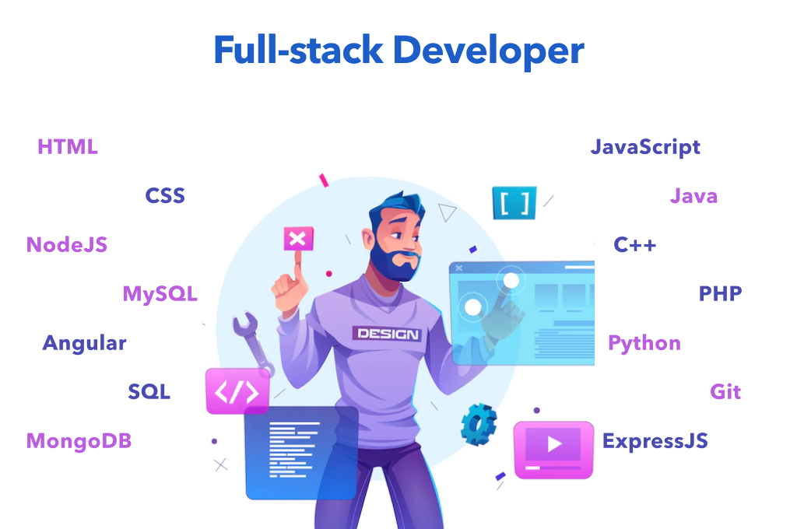

image: |
 |
définition: |
Le développeur full-stack a pour principale mission la programmation d’une application ou d’un site : il est à même de le concevoir de A à Z (création, développement, codage). Il a des compétences dans tous les domaines : back-end, front-end, UX/UI. |
communication: |
Il communique avec tout le monde dans toutes les étapes parce que il pourra aider les autres développeur pour leur missions. |
les missions: |
Ses missions sont de gérer en autonomie toutes les parties d’un projet, Il doit maîtriser au minimum le front-end et le back-end et peut se spécialiser dans un langage présent dans les deux parties, comme le JavaScript, Le full-stack peut être un développeur précédemment spécialisé en front-end, qui a appris d’autres langages pour compléter ses compétences, Il doit savoir interagir correctement avec une base de données, En plus de pouvoir intervenir d’un point de vue technique sur l’ensemble d’un projet, le full-stack doit avoir de bonnes bases en gestion de projet et design et Le full-stack connaît la logique commerciale et l’expérience des utilisateurs, lui permettant ainsi de participer à la stratégie d’une entreprise à forte présence sur le Web.
|
compétence back end: |
il doit savoir utiliser HTML, CSS et JavaScript. |